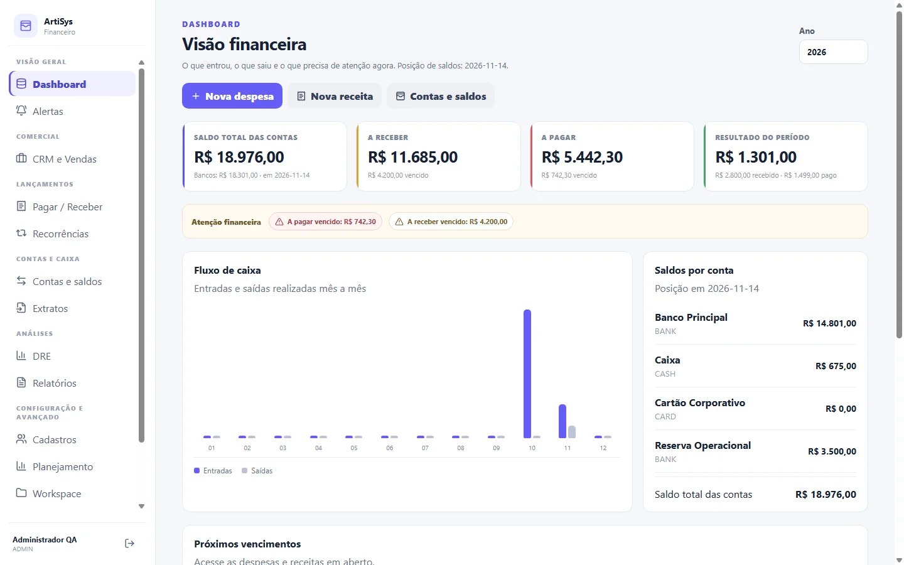
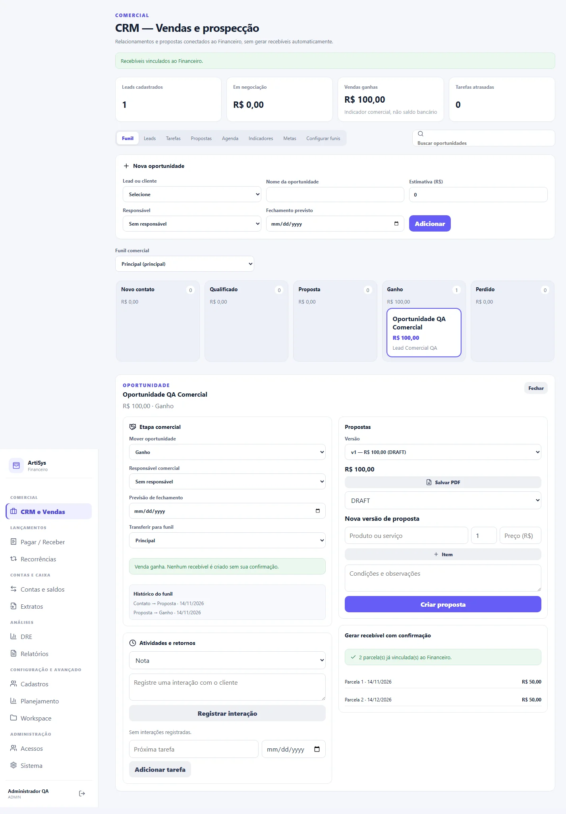
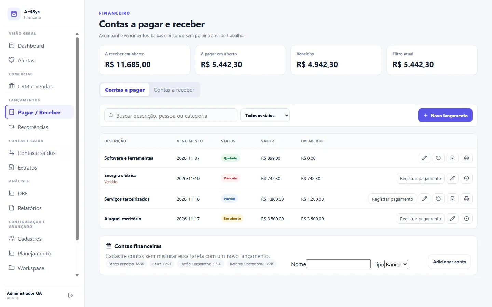
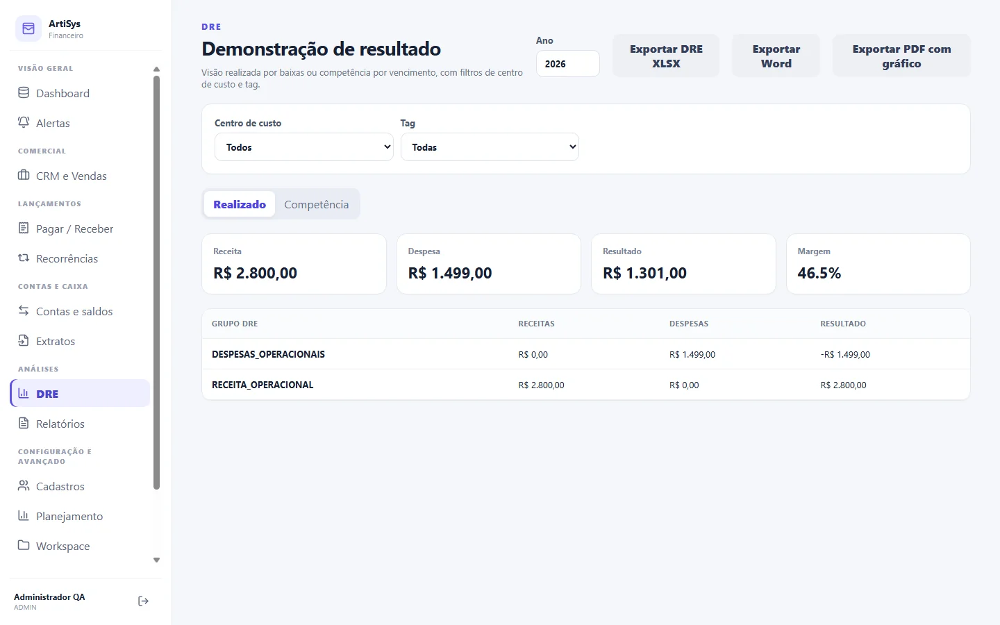
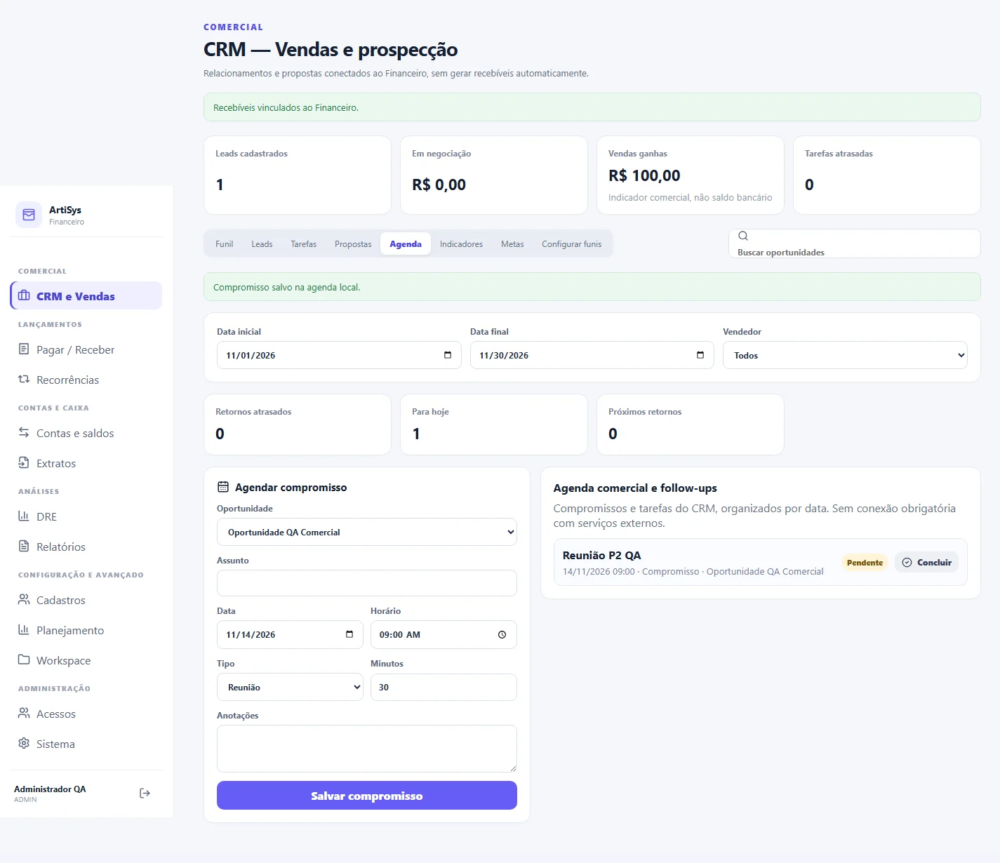
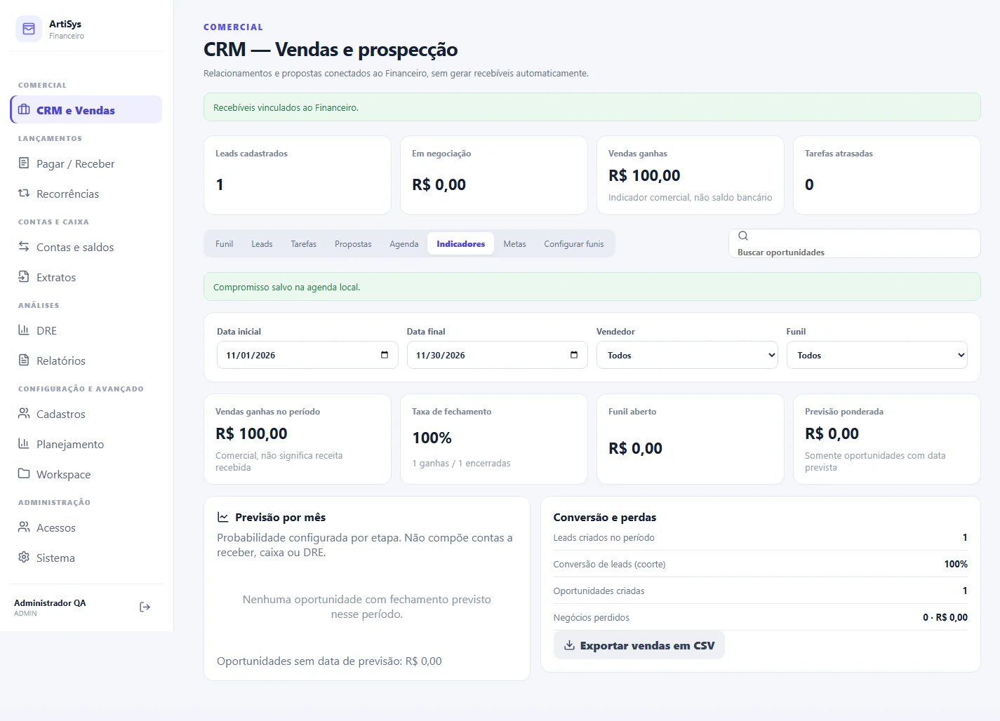

01 / Vendas
CRM que acompanha cada negociação.
Leads, propostas, tarefas e funil de vendas no mesmo sistema.
CRM e gestão financeira no mesmo aplicativo
Do primeiro lead ao controle do caixa. Organize propostas, recebimentos e resultados com a segurança de decidir quando uma venda entra no financeiro.
Licença do aplicativo para Windows · Sem assinatura obrigatória


Uma operação conectada
Leads, propostas, tarefas e funil de vendas no mesmo sistema.

Contas, recorrências e conciliação em uma visão centralizada.

DRE, fluxo de caixa e indicadores sem inflar valores com previsões comerciais.
Capturas reais do aplicativo
Telas do ArtiSys Financeiro para Windows, registradas em testes reais do aplicativo com dados demonstrativos.


CRM + Financeiro
O CRM acompanha a negociação e sugere recebíveis quando a venda é ganha. A conta a receber só nasce depois de sua confirmação explícita, evitando previsões comerciais no saldo, caixa ou DRE.
Imagens autênticas da versão de testes do ArtiSys Financeiro; valores e contatos são demonstrativos. A interface pode variar conforme atualizações.
Para quem é
Profissionais e pequenas empresas que precisam conectar prospecção e vendas com o controle financeiro, mantendo dados e decisões no próprio computador.
O que melhora
CRM e Financeiro no mesmo aplicativo, sem depender de um serviço externo obrigatório
Venda ganha não entra automaticamente no saldo: o recebível exige revisão e confirmação
Centralize contas, fluxo de caixa, DRE, indicadores, tarefas comerciais e relatórios
Mantenha os dados principais em SQLite local e controle a operação no desktop
Funcionalidades
Como funciona
Cadastre suas contas e organize leads, clientes e oportunidades no CRM
Crie propostas, programe tarefas e acompanhe o funil e os indicadores de vendas
Ao ganhar uma venda, revise a sugestão de parcelas e confirme antes de criar recebíveis
Concilie extratos e acompanhe o fluxo de caixa e a DRE com valores efetivamente registrados
Perguntas frequentes
Sim. O CRM comercial está integrado ao próprio aplicativo, com leads, oportunidades, funil, propostas, agenda, indicadores e metas. Não exige contratar um CRM externo.
Não. A venda gera uma sugestão de recebíveis. Você visualiza as parcelas e confirma explicitamente a criação no Financeiro. Projeções comerciais não alteram caixa, saldos ou DRE.
Não. O núcleo do produto é desktop local-first, com banco SQLite local e sem serviço pago obrigatório. Atualizações online são opcionais e dependem da conexão do usuário.
Sim. O aplicativo reúne contas a pagar e receber, fluxo de caixa, DRE, recorrências e importação de extratos de fontes suportadas para conciliação revisada.
Sim. As capturas apresentadas foram feitas durante testes automatizados do aplicativo Electron real com dados demonstrativos, sem mockups.
ArtiSys